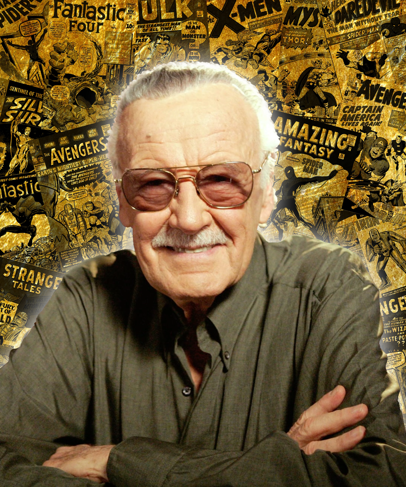

Stan Lee
Co-Creator · Writer · Editor
Era: 1960s–1970s (Marvel’s Silver Age)
Co-created Spider-Man in Amazing Fantasy #15 (1962). Gave Peter Parker his voice: quippy, anxious, and deeply human. Lee’s run introduced Aunt May, J. Jonah Jameson, the Green Goblin, Doctor Octopus, and the idea that “with great power comes great responsibility.”
- Key issues: AF #15 · ASM #1–100